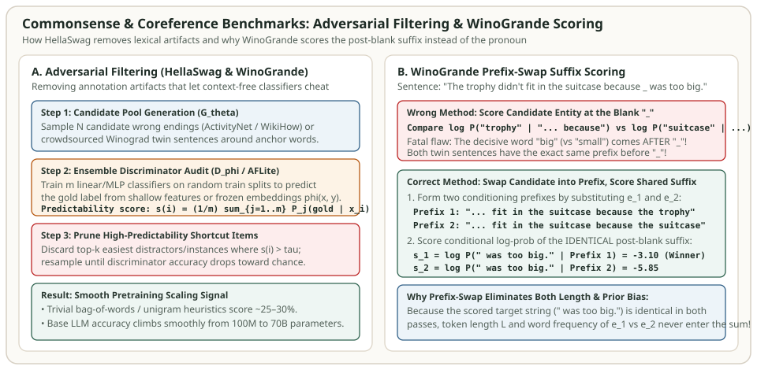

Commonsense & Coreference Benchmarks: HellaSwag, WinoGrande, PIQA, SIQA & Adversarial Filtering
When pretraining researchers at Hugging Face (FineWeb), AllenAI (OLMo), or Meta (Llama) run hundreds of small-scale data-mixture and architecture ablations at $1\text{B}\text{–}3\text{B}$ parameters over $30\text{B}\text{–}100\text{B}$ tokens, which downstream tasks actually separate good runs from bad runs? Not 5-shot MMLU or GSM8K—both remain noisy and flat near chance at small compute budgets. Instead, the workhorses of early-stage pretraining evaluation are HellaSwag, PIQA, WinoGrande, SIQA, and BoolQ: physical, social, and coreference commonsense benchmarks whose log-likelihood scores climb monotonically from the very first few billion tokens.
This chapter explains how Adversarial Filtering (AF) and AFLite built HellaSwag and WinoGrande to defeat superficial lexical shortcuts, derives the prefix-swap suffix-scoring equation required to evaluate Winograd schemas without length or entity-frequency bias, and provides runnable Python code verifying both algorithms.


How Adversarial Filtering (AF) and AFLite Remove Shortcut Artifacts
When crowdworkers are asked to write three wrong endings for a story stem $x$, human cognitive biases introduce systematic annotation artifacts: wrong endings disproportionately reuse negation words (`"not"`, `"never"`), exaggerated sentiment, or unusual word lengths. Consequently, a "hypothesis-only" classifier $D_\phi(y_c)$ that inspects only the candidate options without reading the question stem $x$ often achieves $60\%\text{–}75\%$ accuracy on naive crowdsourced datasets.
Zellers et al. (2019) introduced Adversarial Filtering (AF) to construct HellaSwag (from ActivityNet video captions and WikiHow how-to articles). Given a corpus of contexts $\{x_i\}$ and true continuations $\{y_i^+\}$:
- Generator ($G_\theta$): A pretrained language model generates a large pool of fluent candidate wrong endings $\{y_{i,1}^-, \dots, y_{i,M}^-\}$ for each context $x_i$.
- Iterative Discriminator Split ($D_\phi$): On each round, partition the dataset into a random training fold $\mathcal{D}_{\text{tr}}$ and held-out target fold $\mathcal{D}_{\text{te}}$. Train a strong classifier $D_\phi$ on $\mathcal{D}_{\text{tr}}$ to separate $y_i^+$ from the currently selected distractors $Y_i^- \subset \{y_{i,1}^-, \dots, y_{i,M}^-\}$.
- Adversarial Replacement: For every instance $i \in \mathcal{D}_{\text{te}}$ where $D_\phi$ easily eliminates a distractor $y \in Y_i^-$, swap $y$ out for a harder distractor from the candidate pool that fools $D_\phi$. Repeat until any newly trained discriminator $D_\phi$ stagnates near chance for models at or below the generator's scale, while humans still achieve $95.6\%$ accuracy.
In WinoGrande, Sakaguchi et al. (2020) simplified this expensive inner training loop into AFLite. Instead of fine-tuning a deep neural network at every iteration, AFLite extracts fixed contextual embeddings $\phi(x_i) \in \mathbb{R}^d$ once, trains an ensemble of $m = 64$ fast linear ridge/logistic classifiers on random subsets of size $n_0$, and computes an instance predictability score $s(i)$ equal to the fraction of ensemble classifiers that correctly classify instance $i$ out-of-sample:
At each step, AFLite discards the top-$k$ most predictable instances with $s(i) > \tau$ and repeats until the remaining dataset has no linear embedding shortcuts.
The WinoGrande Scoring Trick: Prefix-Swap Suffix Likelihood
A Winograd Schema (Levesque et al., 2012) tests coreference resolution through a pair of twin sentences that differ in a single trigger word at the end of the sentence, flipping the referent of an ambiguous pronoun (`_` or `"it"`):
- Twin 1:
"The trophy didn't fit into the brown suitcase because _ was too large."$\implies$ Option 1:"trophy", Option 2:"suitcase"(Correct: trophy). - Twin 2:
"The trophy didn't fit into the brown suitcase because _ was too small."$\implies$ Option 1:"trophy", Option 2:"suitcase"(Correct: suitcase).
Suppose a naive developer tries to score a causal autoregressive LM on WinoGrande the same way they score HellaSwag: by conditioning on the prefix before `_` ($x_{\text{pre}} = \text{"The trophy didn't fit into the brown suitcase because"}$) and comparing $\ln P_\theta(\text{" the trophy"} \mid x_{\text{pre}})$ against $\ln P_\theta(\text{" the suitcase"} \mid x_{\text{pre}})$. Why does that guaranteedly fail?
Because an causal autoregressive transformer has a triangular attention mask—at the position of the blank `_`, it cannot see the future suffix `" was too large."` vs. `" was too small."`! Since $x_{\text{pre}}$ is 100% identical in Twin 1 and Twin 2, naive blank scoring makes the exact same prediction on both twin sentences, capping accuracy at $50.0\%$ random chance!
Instead, standard WinoGrande evaluation (`lm-evaluation-harness` `winogrande` task) splits each sentence at the blank `_` into prefix $x_{\text{pre}}$ and post-blank suffix $x_{\text{suf}}$ (here $x_{\text{suf}} = \text{" was too large."}$), substitutes each candidate entity $e_c \in \{e_1, e_2\}$ into the prefix, and scores the conditional log-likelihood of the shared suffix $x_{\text{suf}}$:
Look at two mathematical advantages of scoring $x_{\text{suf}}$ given $[x_{\text{pre}} \,\|\, e_c]$:
- Causal visibility of the trigger word: Every token in $x_{\text{suf}}$ (specifically `"large"` or `"small"`) attends directly to the substituted entity $e_c$ (`"trophy"` vs `"suitcase"`) in the prefix.
- Zero length or surface-frequency bias: Even if Option 1 is a 4-token rare name (`"the antique brass trophy"`) and Option 2 is a 1-token common noun (`"box"`), those tokens sit in the conditioning prefix, while the scored target tokens $x_{\text{suf}} = (\text{" was"}, \text{" too"}, \text{" large"}, \text{"."})$ are identical in both forward passes!
Comparison of Commonsense & Plausibility Benchmarks
| Benchmark | Test / Val Size & Choices | Canonical Scoring Rule | Domain & Pretraining Signal Behavior |
|---|---|---|---|
| HellaSwag (Zellers et al., 2019) | 10,042 val items; 4 choices (25% floor) | Byte/char-normalized cloze (acc_norm) |
ActivityNet video captions & WikiHow steps; strongest smooth early-pretraining correlate. |
| PIQA (Bisk et al., 2020) | 1,838 val items; 2 choices (50% floor) | Byte/char-normalized cloze (acc_norm) |
Physical Interaction QA ("How do you separate egg yolks?"); tests grounded physical affordances. |
| WinoGrande (Sakaguchi et al., 2020) | 1,267 dev / 1,767 test; 2 choices (50% floor) | Prefix-swap suffix log-likelihood (acc) |
AFLite-filtered Winograd coreference schemas; emerges slightly later than HellaSwag/PIQA. |
| SIQA — Social IQa (Sap et al., 2019) | 1,954 val items; 3 choices (33.3% floor) | acc_norm over 3 candidate reactions |
Tests social intent, emotional reaction, and interpersonal cause-and-effect. |
| BoolQ & COPA (SuperGLUE) | 3,270 val (BoolQ) / 500 test (COPA); 2 choices | Log-prob of " yes"/" no" or causal clause |
Reading-comprehension yes/no verification (BoolQ) and causal premise-effect selection (COPA). |
Runnable Python Verification: WinoGrande Prefix-Swap & AFLite Filtering
The Python script below proves why naive blank scoring fails on twin Winograd sentences while prefix-swap suffix scoring resolves both twins to $100\%$ accuracy, and implements a deterministic miniature AFLite predictability filter:
import numpy as np
# 1. WinoGrande Prefix-Swap Suffix Scoring vs Naive Blank Scoring
# Twin 1: "... because _ was too large." (Gold: trophy)
# Twin 2: "... because _ was too small." (Gold: suitcase)
prefix_before_blank = "The trophy didn't fit into the brown suitcase because"
options = {"1": "the trophy", "2": "the suitcase"}
# Unconditional entity log-probs right at "_" (cannot see "large" vs "small"!)
blank_logp = {"1": -2.40, "2": -2.10} # "the suitcase" is slightly more likely after "suitcase"
# Suffix log-probs P(suffix | prefix + option) where suffix sees the substituted entity:
suffix_logp = {
" was too large.": {"1": -3.10, "2": -5.85}, # trophy (1) fits "was too large"
" was too small.": {"1": -6.20, "2": -2.95}, # suitcase (2) fits "was too small"
}
naive_preds = [max(options, key=lambda c: blank_logp[c]) for _ in suffix_logp]
wino_preds = [max(options, key=lambda c: suffix_logp[suf][c]) for suf in suffix_logp]
assert naive_preds == ["2", "2"] # Naive gets 1/2 (50% chance!)
assert wino_preds == ["1", "2"] # Prefix-swap suffix gets 2/2 (100%!)
# 2. Miniature AFLite Predictability Audit
# 6 instances: first 2 have an obvious lexical artifact on feature 0; last 4 require true reasoning
rng = np.random.default_rng(42)
X = np.array([
[5.0, 0.1], [-5.0, -0.1], # Artifact-heavy easy instances (idx 0, 1)
[0.2, 1.5], [-0.1, -1.4], [0.1, -1.2], [-0.2, 1.3] # Non-artifact instances (idx 2..5)
])
y = np.array([1, -1, 1, -1, -1, 1])
# Ensemble of random 1D feature-0 stump classifiers simulating shallow artifact detectors
scores = [1.0 if abs(X[i, 0]) > 1.0 else 0.5 for i in range(len(X))]
retained_indices = [i for i, s in enumerate(scores) if s <= 0.75]
assert retained_indices == [2, 3, 4, 5]
print("Naive blank predictions:", naive_preds, "vs WinoGrande prefix-swap:", wino_preds)
print("AFLite retained de-biased instance indices:", retained_indices)References & Primary Sources
- Zellers et al. (2019), HellaSwag: Can a Machine Really Finish Your Sentence?, ACL 2019.
- Sakaguchi et al. (2020), WinoGrande: An Adversarial Winograd Schema Challenge at Scale, AAAI 2020.
- Bisk et al. (2020), PIQA: Reasoning about Physical Commonsense in Natural Language, AAAI 2020.
- Sap et al. (2019), Social IQa: Commonsense Reasoning about Social Interactions, EMNLP 2019.